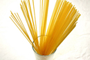
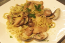
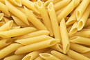
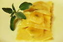

푸드온키워드네이버 검색 순위로 유익한 정보를 확인하세요.
파스타 키워드로 만나다-다양한 소스에 버무려 먹는 이탈리아의 전통 음식, 파스타
인류의 국수 문화를 아시아와 중동, 유럽을 넘나들며 조명한 KBS 다큐멘터리 <누들 로드>를 보셨는지요? 제3편 '파스타 오디세이'에는 파스타와 관련된 흥미로운 기록과 문명의 흔적들이 나옵니다. 그중 영국 옥스포드 대학의 보들라이언 도서관에 보관된, 1154년에 쓰여진 아라비안 학자의 지리서가 있는데요. 이 책에 이탈리아 남부 시칠리아 섬의 트라비아라는 작은 마을의 지형과 생활상을 묘사한 부분에서 파스타의 기원에 중요한 단서가 되는 문구 하나가 등장합니다. 바로 '이트리아'입니다. 문헌상으로 존재하는 이탈리아 최초의 건조 국수로 학자들은 이트리아를 일종의 파스타로 보고 있습니다. 사실 파스타의 정확한 기원은 누구도 알지 못합니다. 다만 추측할 뿐이지요. 왜냐하면 인류는 9천년 전부터 밀을 재배해왔고, 빵과 국수를 비롯하여 밀가루를 이용한 음식들을 꾸준히 만들어왔으니까요. 파스타(pasta)의 어원이 '반죽한 가루'라는 것에서 짐작할 수 있듯 인류는 어떻게 하면 밀을 좀 더 소화되기 쉬운 형태로 맛있게 먹을 수 있을지를 고민해 왔습니다. 현재 300여 종류가 넘는 파스타를 만들어 먹는 이탈리아 사람들이 파스타 디자인의 가장 기본적인 조건으로 씹는 맛과 소스와의 결합, 쉽게 먹을 수 있는지 등을 중시하는 것도 이와 무관하지 않지요. 스파게티와 링귀네, 탈리아텔레 등의 롱 파스타(long Pasta), 펜네와 파르펠레, 루오타 등의 쇼트 파스타(short Pasta)로 구분되기도 하는 파스타는 어떤 소스와 결합하느냐에 따라 그 종류가 매우 다양한데요. 오늘은 우리가 이탈리안 레스토랑의 메뉴에서 흔히 볼 수 있는 파스타에 대해 알아보겠습니다. 글ㅣ손지혜 (LUEL 피처 에디터)
- 스파게티
- 토마토 소스에 버무린 스파게티. 세계적으로 가장 널리 알려진 파스타입니다. 스파게티(spaghetti)의 어원은 끈을 뜻하는 'spago'입니다. 참고로 스파게티를 눌러 놓은 듯 납작한 모양을 한 파스타를 링귀네(linguine)라고 부릅니다. 지름이 1.8~2.0mm 정도 되는 긴 국수 형태의 스파게티는 대표적인 건조 파스타입니다. 파스타 문화가 만개한 시칠리아와 제노바, 나폴리 등은 일찍부터 건조 파스타가 발달한 곳입니다. 바다와 인접한 지리적인 위치 때문에 해풍에 의해 파스타의 자연 건조가 쉬웠던 까닭입니다. 우리가 흔히 보는 건조 파스타는 듀럼 밀로 만듭니다. 듀럼 밀은 햇빛이 강렬하고 건조한 지역에서 잘 자라기 때문에 이탈리아 남부, 스페인, 그리스 등에서 이를 이용한 요리들이 많지요. 듀럼 밀의 배아를 굵게 갈아서 만든 가루를 세몰라라고 합니다. 세몰라에 물을 붓고 반죽한 파스타는 밀가루와 계란으로 반죽한 여느 파스타보다 끈기가 있고 탄력이 강합니다. ▶레시피보기
- 탈리아델레
- 지름이 약 5~8mm 정도 되는 롱 파스타입니다. 탈리아텔레(taliatelle)가 '자르다'라는 뜻을 가졌다는 것에 짐작할 수 있듯 밀가루와 달걀로 만든 반죽을 얇게 밀어 돌돌 만 다음 칼국수처럼 칼로 잘라서 만듭니다. 파스타는 표면의 매끄러움 정도와 단면적의 넓이에 따라 소스를 흡수하는 정도가 다르기 때문에 다양한 요리법이 있습니다. 보통 탈리아텔레는 생크림과 버터, 파마산 치즈로 만든 걸죽한 크림 타입의 소스와 궁합이 잘 맞습니다. 이탤리언 레스토랑 메뉴에 간혹 '페투치네(fettuccine)'라는 파스타를 보셨을 텐데요. 이는 로마식 탈리아텔레로 지름이 약 1cm 정도 되는 파스타입니다. 한편 반죽을 얇게 밀어 단면을 넓게 만든 파스타로 라자냐(lasagna)를 빼놓을 수 없습니다. 라자냐는 모든 생파스타의 기본이 됩니다. 반죽을 얇게 밀은 형태 그 자체를 라자냐로 보니까요. 라자냐를 어떻게 자르냐에 따라 탈리아텔레가 되기도 하고, 파파르델레(지름 2~3cm의 파스타)가 되기도 합니다. ▶레시피보기
- 펜넬
- 양끝을 사선으로 자른 튜브 모양의 파스타로 대표적인 쇼트 파스타입니다. 구멍이 뚫려 있고, 표면은 가는 홈으로 되어 있어 소스를 아주 잘 빨아들이죠. 펜네(penne)는 모양이 펜촉처럼 생겼다고 해서 붙여진 이르입니다. 길이나 크기, 줄무늬 유무에 따라 펜네 안에서도 그 종류가 다양하게 나뉩니다. 길이가 짧은 것을 매체 펜네, 줄무늬가 있는 것을 리가테라고 부릅니다. 바로 푸질리(fusilli)인데요. 마치 나사의 몸통처럼 꼬여있는 모양을 하고 있는 파스타로 펜네와 함께 샐러드나 냉파스타, 그라탕 요리에 쓰입니다. 구조상 꼬인 사이사이로 소스가 잘 배기 때문에 어떤 소스와도 잘 어울리는 파스타로 통합니다. ▶레시피보기
- 라비올리
- 이탈리아식 만두로 통하는 라비올리(ravioli)도 일종의 파스타입니다. 반죽을 얇게 밀어 납작하게 만든 후 그 안에 다진 쇠고기나 생선, 리코타 치즈, 시금치 등의 야채로 만든 소를 넣어 빚어 낸 것이지요. 라비올리는 '둘러싸다'라는 뜻을 가지고 있습니다. 사각형이나 반달, 삼각형 등 다양한 형태로 만들어집니다. 참고로 토르텔리니(tortellini)는 작은 반달 모양으로 빗은 라비올리의 양끝을 붙여서 만든 파스타입니다. 볼로냐의 사람들은 일찍이 토르텔리니를 뜨거운 고기 육수에 삶아 먹었다고 합니다. ▶레시피보기
오늘의 키친을 내 블로그나 카페에 !